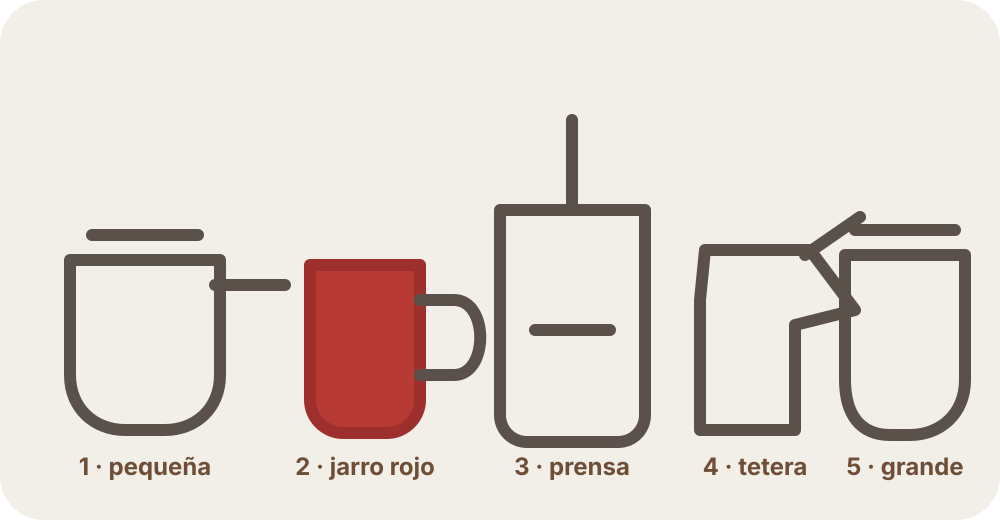

Cacerola pequeña
Primera agua, del caño. No se bebe. Hierve para calentar y enjuagar la prensa, tapa, émbolo, filtro, placa cruz y resorte.
Este recorrido muestra exactamente cómo organizo mi cocina y cómo preparo mi café. Mi método es el contenido principal; las técnicas habituales aparecen al final, separadas como alternativas.


Espacio preparado para la fotografía originalOrden de trabajo: cacerola pequeña → jarro rojo → prensa francesa → tetera → cacerola grande.
Trabajo con dos aguas distintas. La primera, del caño, solo sirve para calentar y enjuagar la prensa y sus piezas. La segunda es agua limpia comprada para beber y es la única que uso para preparar el café.
Observación: el agua de calentamiento no se bebe y se desecha antes de añadir el café.
Toca un elemento o pasa el cursor para recordar su función.
Primera agua, del caño. No se bebe. Hierve para calentar y enjuagar la prensa, tapa, émbolo, filtro, placa cruz y resorte.

Recibe temporalmente la tapa y el conjunto del émbolo/filtros calientes, para no apoyarlos directamente sobre la mesa.

Es el recipiente principal: aquí se calienta la jarra, se añade el café, se infusiona y se realiza el prensado.

Recibe el agua limpia hirviendo y permite verterla sobre el café con movimientos circulares controlados.

Segunda agua: limpia y comprada para beber. Se usa para preparar el café y, cuando queda vacía, también puede recibir el café terminado.
Enciendo simultáneamente dos cacerolas. La pequeña contiene agua del caño: esa agua no será para beber; solamente la usaré para calentar y enjuagar la prensa francesa y sus piezas. Pongo esa hornilla al máximo para que hierva rápido.
Al mismo tiempo enciendo la cacerola grande con el agua limpia que compro para beber y que finalmente usaré para preparar el café. Esta segunda hornilla queda al mínimo porque todavía necesito esperar que hierva la primera agua y realizar el calentamiento de la prensa durante aproximadamente 2 minutos.
Cuando hierve el agua de la cacerola pequeña, la vierto en la prensa francesa y coloco la tapa con el émbolo.
Aprovecho esa agua hirviendo para enjuagar con agua caliente las piezas que llamaré en conjunto filtros: el filtro y las dos placas —incluida la pieza en forma de cruz— junto con el resorte. Durante aproximadamente 10 segundos subo y bajo el émbolo para que el agua caliente pase por estas piezas.
Finalmente subo completamente el émbolo y dejo los filtros en la zona superior para que el vapor y el calor ayuden también a calentar toda la jarra.
En mi celular inicio un cronómetro de 2 minutos y dejo el agua caliente dentro para que la prensa francesa tome temperatura.
Cuando termina, retiro la tapa junto con el émbolo y sus filtros. Como están calientes y no quiero apoyarlos directamente sobre la mesa, los coloco dentro del jarro rojo preparado al lado de la prensa. Después retiro el agua utilizada para el calentamiento.
Echo aproximadamente 2 a 3 cucharas grandes de café dentro de la prensa francesa.
Después sujeto la jarra y la agito suavemente para distribuir el café de forma horizontal. Busco que la superficie quede aproximadamente nivelada y que el café no quede amontonado formando una especie de “cerro” en el centro.
Para ese momento ya debería haber hervido el agua limpia de la cacerola grande. Retiro la cacerola y la coloco en el extremo derecho de mi zona de trabajo.
Vierto parte —o la cantidad necesaria— de esa agua limpia dentro de la tetera. Con la tetera comienzo a echar el agua sobre el café de la prensa francesa haciendo movimientos circulares hasta terminar toda el agua preparada en la tetera.
Cuando termino de echar el agua con la tetera, utilizo una cuchara para mezclar el café. Hago un movimiento parecido al que se haría al endulzar una bebida.
No agrego azúcar ni ningún otro ingrediente. Solamente mezclo el café y el agua con la cuchara.
Inmediatamente después vuelvo a colocar la tapa de la prensa francesa. Bajo el émbolo solamente hasta que el filtro llegue aproximadamente a la altura donde comienza la superficie superior del café.
Todavía no presiono el café hacia el fondo.
Uso nuevamente mi celular. Configuro un cronómetro de entre 4 y 5 minutos. Normalmente utilizo 4 minutos porque, si estoy lejos de la cocina, el tiempo que demoro en regresar hace que termine dentro del intervalo aproximado de 4 a 5 minutos.
Durante ese tiempo dejo infusionar el café sin seguir bajando el émbolo.
Cuando transcurren aproximadamente los 4 minutos, bajo lentamente el émbolo. Algunas personas lo presionan completamente hasta el fondo; yo prefiero detenerme aproximadamente a una distancia equivalente al grosor de un dedo antes de tocar el fondo.
Lo hago como precaución adicional para reducir todavía más la posibilidad de que algún grano o partícula llegue al café líquido filtrado, aunque probablemente no sucedería. Este consejo lo aprendí en Internet y lo incorporé a mi manera de preparar café.
Cuando termino de prensar, vacío inmediatamente el café y sostengo el émbolo mientras vierto el contenido. Puedo vaciarlo en la cacerola grande —que para ese momento ya está vacía— o en cualquier recipiente adecuado que soporte café casi hirviendo.
No dejo el café preparado dentro de la prensa francesa. En el fondo siguen estando los granos y no quiero que permanezcan en contacto con el café líquido durante más tiempo del necesario. De esta manera busco conservar mejor su olor y sabor.
Los archivos se cargan solo al pedirlos. Colócalos en videos/video-01.mp4 hasta video-10.mp4.
Estas técnicas no forman parte de mi procedimiento. Son otras maneras conocidas de trabajar con prensa francesa.
Algunas recetas pesan café y agua para repetir una proporción constante, por ejemplo alrededor de 1:15 o 1:16, ajustándola al gusto.
En vez de usar el agua inmediatamente al hervir, algunas personas esperan o miden la temperatura antes de verterla.
Otra técnica humedece primero el café con una pequeña parte del agua, espera unos segundos y luego completa el vertido.
Algunos métodos esperan varios minutos y después rompen con una cuchara la capa de café que se forma en la superficie.
Existen métodos que amplían el tiempo y luego retiran espuma y partículas antes de servir, buscando una taza más limpia.
También se puede pasar el café preparado por un filtro adicional si se desea reducir todavía más los sedimentos.